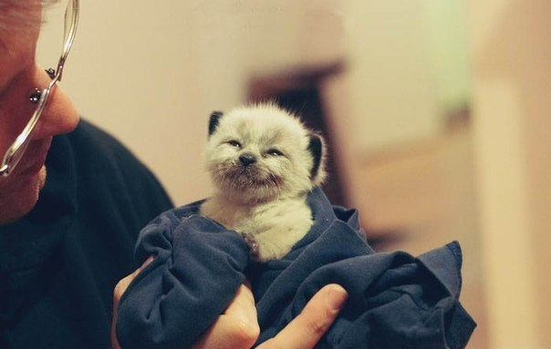

Обо мне
Я, Полунин Владислав Владимирович. Прозвища не предусмотрены.
Мои любимые предметы
- Телекомуникационные предметы
- Высокоуровневые методы информатики и программирования
- Интернет-программирование
Мой любимый фильм, книга и сериал
Мой облик счастья и грусти

ОБЛИК СЧАСТЬЯ
Год Родина
страна США
слоган Бей предателей!
режисер Куэста, Глаттер, Джонсон
сценарий Бромелл
ОБЛИК ГРУСТИ